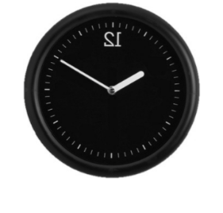
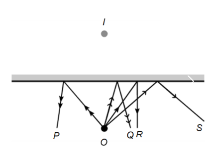
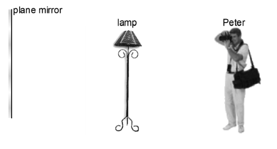
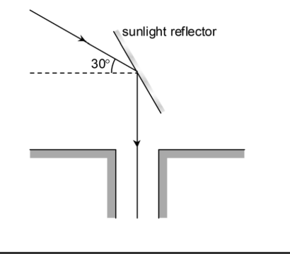

S3 Physics · 4 multiple-choice items
The figure below shows the image of a clock formed by a plane mirror. The time is

An object O is placed in front of a plane mirror and an image I is formed behind the mirror as shown in the figure below. Among rays P, Q, R and S, which of them correctly represent the reflected rays from the mirror?

Peter is standing 4 m in front of a plane mirror as shown. A lamp is located midway between Peter and the mirror. If Peter wants to take a clear photograph of the image of the lamp, at what distance should he focus?


The figure above shows a sunlight reflector installed on the roof of a building. At the instant shown, sunlight falls at an angle of 30° to the horizontal and is then reflected vertically into the building. What is the angle between the reflector and the horizontal?
Teacher page · 4 items
Answer: D. 10:10
Guide: A plane mirror reverses left and right. The image 12 looks like SI, which corresponds to 10:10.
Answer: B. Q and S only
Guide: Reflected rays appear to come from the image I behind the mirror. Q and S do; P and R do not.
Answer: C. 6 m
Guide: The lamp is 2 m from the mirror, so its image is 2 m behind the mirror. Peter is 4 m from the mirror, so he must focus 6 m away.
Answer: C. 60°
Guide: Incident ray is 30° to the horizontal and the reflected ray is vertical. Angle of incidence equals angle of reflection, so the reflector is 60° to the horizontal.